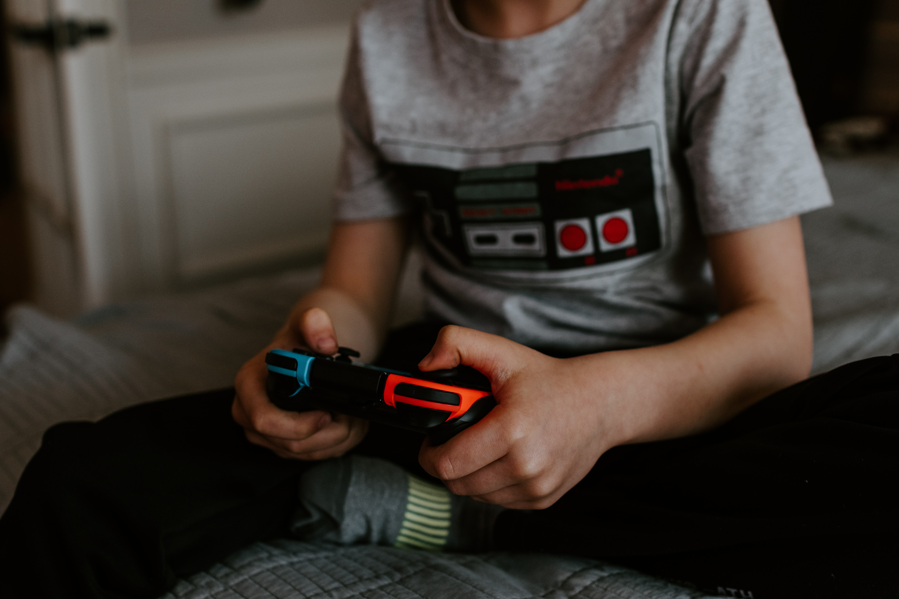

This guide assumes that you're new or relatively new to video games. It's meant as a guide for new players or parents trying to understand the games their kids might be playing.
 Photo by Kelly Sikkema on UnsplashIf this is you, you're in the right place...
There are a lot of ways people can get video games. It seems that almost any device with a screen and an input device can be a platform for a video game of some sort
This guide will walk you through some of the common devices and genres available to choose from and provide a basic understanding of what's involved with each.
Without a device, there is no video game. See the devices page to browse details of some of the common devices to see what interests you.